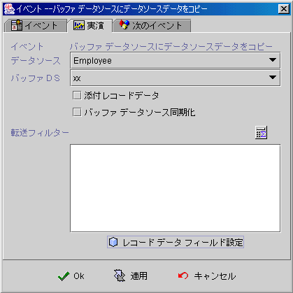

|

データソース内容を Buffer
データソースへコピー
(copy data source data to buffer data source)
-
データソース (data source) ：
データソースの選択
(source)。
-
Buffer データソース (buffered DS)：
buffer データソースの選択 (target)。
-
添付レコードデータ (append record data)：
データソース資料をBuffered data source
既にあるレコードの後ろに添付 (append) します 。
-
Buffer データソース同期化 (buffer data source Synchronize)：
選択すると (checked)，システムはデータソースから Buffered
Data Source へコピーする時に，Buffered データソースは同時に新規前と後イベント (before and
after insert event) と保存前と後イベント (before and after post event)を起動します。関連コンポーネント
(data aware component) も行毎に表示更新されます。ソースを素早くコピーしたい時に，ここは選択しません
(unchecked)。
-
転送フィルター
(transfer filter)：
データソースをコピーする時に，条件フォーミュラで条件に満たす資料を選び出します。
-
レコードデータフィールド設定 (record data fields setting)：
Buffer
Data Source フィールドに値を与えます。

【レコードデータフィールド設定】(record data
fields setting) のキーを押した後に，上の Buffered
データフィールドフォームが表示されます。フィールド名 (field name)
は Buffer Data
Source フィールド順序で配列され，フィールド値はフォーミュラ (formula)
で与えられます。
Copyright © 2001~
2004 Probe Technology Inc. . All Rights Reserved.
Questions, comments,
and suggestions to Service@probe.com.tw
|